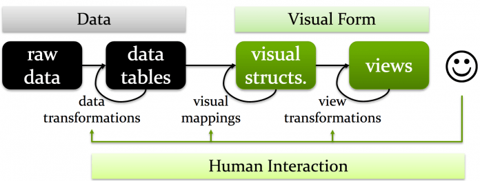
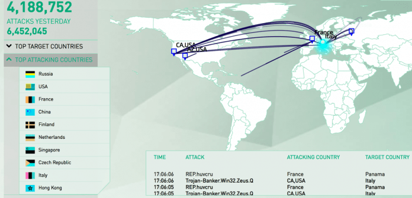
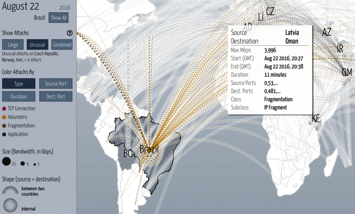
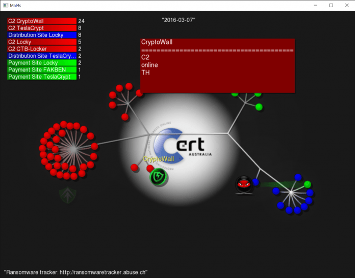
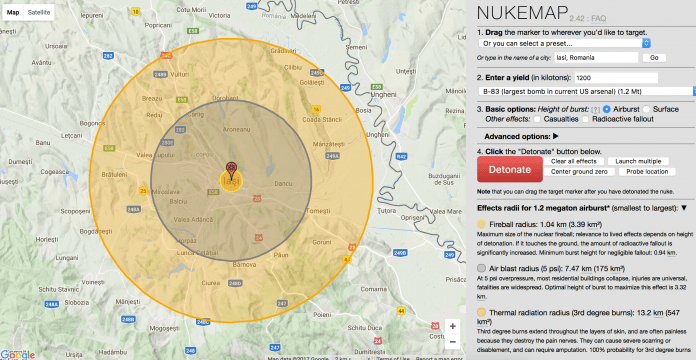

Data publicării: 08.05.2017
Autor articol: Sabin Buraga
Preambul
Actualmente, există un volum mare de date prezente în cadrul spațiului World Wide Web, atât sub formă de conținut destinat consumului uman (pagini Web, însemnări în cadrul diverselor aplicații cu caracter social, comentarii și recenzii de articole/produse etc.), cât și ca seturi de date procesabile de către calculator – eventual, accesate via servicii Web publice, pe baza unor interfețe de programare a aplicațiilor (așa-numitele API – Application Programming Interfaces).
Apare necesitatea ca aceste date (de dorit, cunoștințe) deținute de sistemele informatice curente să poată fi integrate, reutilizate și monetizate. Unul dintre aspectele de interes în acest sens îl reprezintă vizualizarea datelor, o arie de cercetare interdisciplinară – reunind baze de date, interacțiune om-calculator, grafică computațională, procesarea volumelor largi de date (big data), statistică și altele – ce se bucură de o evoluție și utilizare practică impresionantă (Buraga, 2017). Demersul articolului de față este cel de a ilustra diverse tehnici de vizualizare a datelor din prisma securității software.
Aspecte de interes privind vizualizarea datelor
Vizualizarea datelor (data visualization sau infoviz) reprezintă o clasă de tehnici care vizează îmbunătățirea cogniției umane (augmenting cognition) prin intermediul reprezentărilor vizuale – eventual, interactive – generate de calculator pe baza unor date abstracte de intrare. Astfel, putem considera vizualizarea datelor ca fiind o asociere dintre informații și narațiuni vizuale.
Criteriile minimale pe care trebuie să le satisfacă o tehnică de vizualizare sunt:
- Vizualizarea trebuie să se bazeze pe date existente (non-vizuale).
- Vizualizarea trebuie să producă o imagine (conținut grafic).
- Rezultatele oferite trebuie să fie lizibile și recognoscibile.
Printre multiplele beneficii ale vizualizării datelor, se pot enumera (Card, 2008; Buraga, 2016):
- Reducerea căutării informațiilor de interes pentru utilizator(i).
- Suport oferit pentru detectarea unor modele (patterns).
- Codificarea informațiilor direct în cadrul unui mediu interactiv – diverse studii proprii sunt prezentate în (Grigoriu & Buraga, 2011).
- Explicarea unor fenomene/concepte – e.g., vizualizarea concurenței programelor scrise în limbajul Go (Daniluk, 2016).
- Monitorizarea evoluției datelor/informațiilor/cunoștințelor – dintre multitudinea soluțiilor existente, o exemplificare vizează evoluția muzicii de dans occidentale (Khan, 2011).
- Permiterea realizării de inferențe (în contextul, bunăoară, a inteligenței artificiale și a Web-ului semantic), a proceselor decizionale, plus a predicțiilor (drept context, se poate menționa un domeniu precum învățarea automată) – a se consulta (Yee & Chu, 2015).
- Facilitarea explorării unui spațiu de valori, inclusiv oferirea de suport utilizatorului pentru efectuarea unor operații (e.g., comparare, detaliere) – a se vedea (Rosling, 2007).
- Relevarea unor tendințe (revealing trends) sau caracteristici ale unui set de date – un studiu recent este ilustrat de (Matejka & Fitzmaurice, 2017) care generează vizualizări diferite, deși datele prezintă aceleași trăsături statistice.
- Plasarea datelor/informațiilor într-un context dat – un exemplu este proiectul Universcale realizat de Nikon (2015).
- Oferirea de perspective asupra unui domeniu/subiect de interes – exemplificare: vizualizarea distragerii atenției șoferilor auto de către sistemele activate prin voce din cadrul telefoanelor de tip smart (Strayer et al., 2015).
- Stimularea imaginației utilizatorului (oferirea de răspunsuri creative la întrebarea “Ce se întâmplă dacă…?”).
Principalele etape vizând modelarea și proiectarea unor vizualizări de interes sunt ilustrate în următoarea figură – adaptare după (Card, 2008).

Uzual, se adoptă o metodologie iterativă pentru diverse tehnici de vizualizare, conform tipurilor și caracteristicilor datelor considerate ca surse de intrare (Munzner, 2016).
Spațiul alocat acestui articol nu permite alte detalii, dar cititorul interesat poate consulta resursele bibliografice puse la dispoziție.
Vizualizarea datelor în contextul securității datelor
Actualmente, există un volum mare de date vizând securitatea sistemelor informatice. Drept exemplificări tipice, putem menționa datele colectate prin intermediul proceselor de jurnalizare a unor servicii de sistem, inclusiv servere Internet/Web și aplicații diverse, plus a celor preluate în urma analizării – eventual, în timp-real – a traficului de rețea (cu sau fără fir).
Tehnicile de vizualizare a datelor pot releva informații importante despre securitatea unui sistem informatic.
Drept posibile utilizări pragmatice ale tehnicilor de vizualizare se pot considera următoarele (Marty, 2009):
- Perimetre potențial atacate (perimeter threat);
- Analizarea fluxului de date în cadrul unei rețele ori a unui cluster/cloud (network flow analysis);
- Activitățile realizate de un sistem precum firewall, proxy, gateway;
- Analizarea semnăturilor diverșilor agenți;
- Acțiunile întreprinse (modus operandi) și/sau datele furnizate de utilizatori (umani ori software – e.g., roboți Web, agenți conversaționali etc.), eventual în cadrul unui sistem de tip honey pot și honey net;
- Modelarea comportamentului atacatorului;
- Studierea riscurilor și tipurilor de impact asupra unui sistem (posibil compromis).
Din multitudinea de tehnici, strategii și instrumente de vizualizare aliniate problematicii securității software, vom prezenta trei aplicații on-line ce recurg la cele mai recente tehnologii Web disponibile în cadrul browser-ului.
Figurarea tipurilor de atacuri la nivel mondial: Norse Attack Map
Pe baza a peste 8 milioane de senzori capabili să emuleze peste 6000 de tipuri de aplicații destinate calculatoarelor portabile, automatelor bancare, sisteme critice de infrastructură, camere TV cu circuit închis etc., Norse Attack Map figurează diverse atacuri informatice, la diverse niveluri. Alte aplicații similare sunt ThreatCloud (a se urmări figura de mai jos), FireEye și Karpensky CyberThreat Real-Time Map.

Vizualizarea atacurilor de refuz de servicii: Digital Attack Map
Această aplicație Web ilustrează atacuri de tip refuz distribuit de servicii – DDoS (Distributed Denial of Service). Sunt oferite și exemple istorice ce pot fi reanalizate în scop educațional. În figura următoare este vizualizată suita de atacuri provenite din diverse țări asupra sistemelor informatice ale Braziliei pe perioada jocurilor olimpice desfășurate în luna august 2016.

Ilustrarea datelor privind software de tip ransomware: mal4s
Folosind seturile de date publice referitoare la fenomenul ransomware (software malițios ce solicită victimelor recompense în schimbul disponibilității datelor/sistemelor compromise), poate fi utilizată o soluție open source de vizualizare a informațiilor de interes. Un exemplu este rtmal4sviz.

Studierea efectelor armelor nucleare: Nukemap
Acest experiment de vizualizare – implementat de Alex Wellerstein – oferă detalii privind efectele unor tipuri de arme nucleare (inclusiv diverse bombe detonate de-a lungul istoriei) pentru studierea gradului de radioactivitate și a numărului de potențiale victime umane. Instrumentul poate fi util și pentru a explora posibile atacuri realizate de către drone, în contextul terorismului internațional.

Referințe bibliografice
- Buraga, S., Human-Computer Interaction, Facultatea de Informatică, UAIC Iași, România, 2017: http://profs.info.uaic.ro/~busaco/teach/courses/hci/
- Buraga, S., An Introduction to Data Visualization, Facultatea de Informatică, UAIC Iași, România, 2016.
- Card, S., “Information Visualization”, Human-Computer Interaction Handbook (Second Edition), Taylor & Francis, 2008.
- Daniluk, I., Visualizing Concurrency in Go, 2016: http://divan.github.io/posts/go_concurrency_visualize/
- Grigoriu, A., Buraga, S., “Studii asupra vizualizării datelor și infograficelor”, Volumul de lucrări ale Conferinței Naționale de Interacțiune Om-Calculator (RoCHI 2011), Matrix Rom, 2011.
- Khan, O., How Music Travels, 2011: http://www.thomson.co.uk/blog/wp-content/uploads/infographic/interactive-music-map/index.html
- Marty, R., Applied Security Visualization, Pearson Education, 2009.
- Matejka, J., Fitzmaurice, G., “Same Stats, Different Graphs: Generating Datasets with Varied Appearance and Identical Statistics through Simulated Annealing”, ACM SIGCHI Conference on Human Factors in Computing Systems, ACM, 2017: http://www.autodeskresearch.com/publications/samestats
- Munzner, T., Visualization Analysis & Design (Full Day Tutorial), 2016: http://www.cs.ubc.ca/~tmm/talks.html#vad16act
- Rosling, H., “New Insights on Poverty”, TED 2007: http://www.ted.com/talks/hans_rosling_reveals_new_insights_on_poverty
- Strayer, D. et al., “The Smartphone and the Driver’s Cognitive Workload”, AAA Foundation for Traffic Safety, 2015: http://www.aaafoundation.org/sites/default/files/strayerIIIa_FINALREPORT.pdf
- Yee, S., Chu, T., A Visual Introduction to Machine Learning, 2015: http://www.r2d3.us/visual-intro-to-machine-learning-part-1/
- * * *, Digital Attack Map, 2017: http://www.digitalattackmap.com/gallery/
- * * *, rtmal4sviz, 2016: http://github.com/gitunique/rtmal4sviz
- * * *, Norse Attack Map, 2017: http://map.norsecorp.com/
- * * *, NukeMap, 2017: http://nuclearsecrecy.com/nukemap/
- * * *, Universcale, Nikon 2015: http://www.nikon.com/about/sp/universcale/